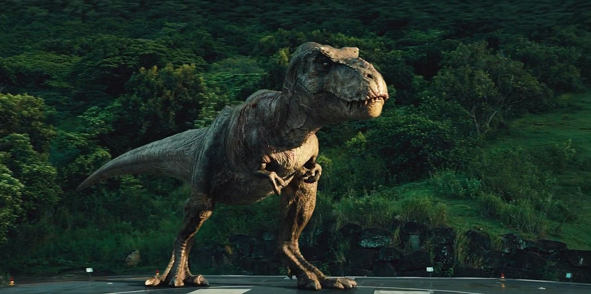

Tyrannosaurus rex (del griego latinizado tyrannus 'tirano' y saurus 'lagarto', y el latín rex, 'rey')1 es la única especie conocida del género fósil Tyrannosaurus de dinosaurio terópodo tiranosáurido, que vivió a finales del período Cretácico, hace aproximadamente entre 68 y 66 millones de años, en el Maastrichtiense, en lo que es hoy América del Norte.
T. rex fue un carnívoro bípedo con un enorme cráneo equilibrado por una cola larga y pesada. En relación con sus largos y poderosos miembros traseros, los miembros superiores de Tyrannosaurus eran pequeños, pero sorprendentemente fuertes para su tamaño, y terminaban en dos dedos con garras. Aunque otros terópodos rivalizan o superan a Tyrannosaurus rex en tamaño, todavía es el mayor tiranosáurido conocido y uno de los mayores depredadores conocidos de la Tierra, midiendo entre doce y trece metros de largo, cuatro metros de altura hasta las caderas, y con pesos estimados entre seis y nueve toneladas. Durante mucho tiempo fue el mayor carnívoro de su ecosistema; debió de haber sido el superpredador, cazando hadrosáuridos y ceratópsidos, aunque algunos expertos han sugerido que era principalmente carroñero. El debate de si Tyrannosaurus fue un depredador dominante o un carroñero es uno de los más largos en la paleontología.
Hay más de 30 especímenes de Tyrannosaurus rex identificados, algunos de los cuales son esqueletos casi completos. Se han encontrado tejido conjuntivo y proteínas en por lo menos uno de estos especímenes. La abundancia de material fósil ha permitido investigar en detalle muchos aspectos de su biología, incluyendo su ciclo de vida y su biomecánica. Los hábitos de alimentación, la fisiología y la velocidad potencial de Tyrannosaurus rex son objeto de controversia. Su taxonomía es también polémica, con algunos científicos que consideran a Tarbosaurus bataar de Asia como una segunda especie de Tyrannosaurus mientras otros mantienen a Tarbosaurus como género separado. Varios otros géneros de tiranosáuridos norteamericanos también han sido sinonimizados a Tyrannosaurus.